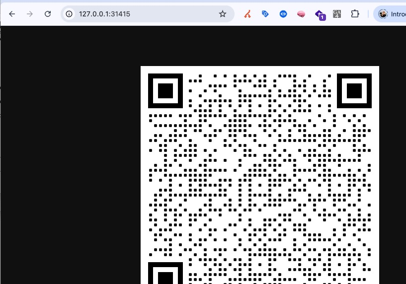
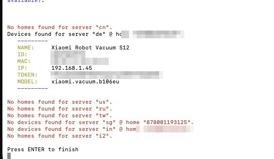
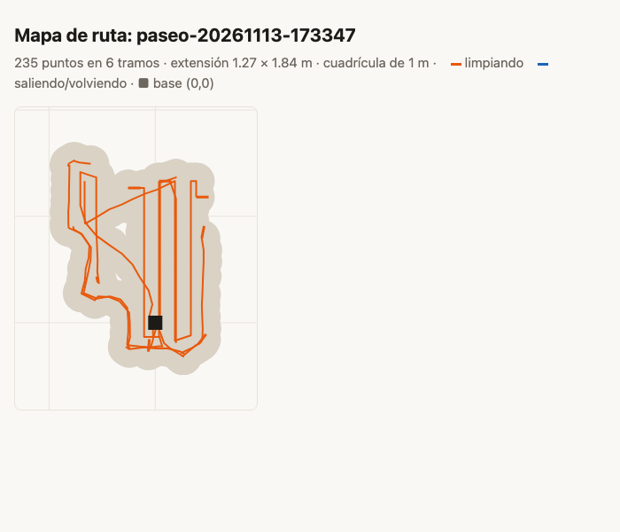
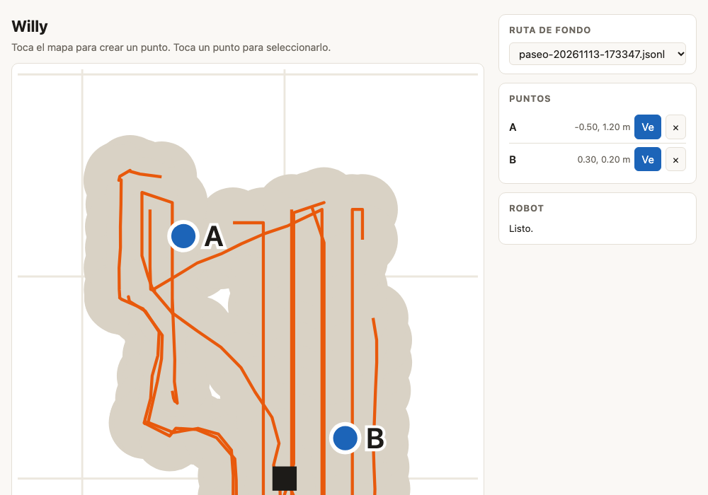

13 nov 2026
hitomañana
Encontrar el robot en la red sin saber su IP
Los dispositivos Xiaomi responden a un paquete "hello" del protocolo miIO (UDP, puerto 54321). Mandándolo a toda la red de casa contestó uno: el robot, en 192.168.1.45. La respuesta trae su ID de dispositivo y el prefijo Xiaomi de la MAC lo confirma.
El hello responde a cualquiera, pero para todo lo demás (estado, mover, limpiar) hace falta el token: una clave de 32 caracteres hex que se crea al emparejarlo con Mi Home.
plano de terminal con el escaneo y la respuesta del robot. Difuminar MAC e ID.
decisiónmañana
Lluvia de ideas: 10 proyectos y por dónde empezar
Repaso de lo que ya trae de serie la app (programaciones por habitación, zonas prohibidas, escenas, voz) y 10 proyectos encima: "ven aquí" con NFC, mando de PS/Xbox, bot de Telegram, patrulla de seguridad con un móvil encima, mapa de calor del wifi, robot con IA que mira si te has dejado la vitro encendida…
Orden elegido: 1 "ven aquí" → 5 bot de Telegram → 6 patrulla → 10 robot con IA. Sin rootear de momento: los scripts usan las mismas órdenes que la app y no tocan el firmware.
Doc completo: ideas y proyectos · copia local: robot-aspirador-ideas-y-proyectos.md
el proyecto 10 (IA + móvil como ojos) es el gancho del título.
aprendizajetarde
Cómo se saca el token
Mi Home ya no enseña el token. La vía actual es el Xiaomi Cloud Tokens Extractor: entras con tu cuenta Xiaomi (usuario/contraseña o escaneando un QR con la app) y lista cada dispositivo con su ID, IP, token y modelo exacto.
Regla del proyecto: el token va a ~/code/willy/.env y nunca a un chat, ni a capturas, ni al repo.
hitotarde
El extractor, metido en Docker
Para no instalar dependencias de Python en el Mac, el extractor vive en token-extractor/ con su Dockerfile (código fijado al commit c4db715 del repo). Se lanza con:
~/code/willy/token-extractor/run.sh
Es interactivo y se ejecuta en una terminal propia, no a través de la IA, para que la contraseña y el token no pasen por el chat. Expone el puerto 31415 para ver el QR o el captcha en http://127.0.0.1:31415.
buen momento para explicar por qué separar secretos del asistente de IA.
hito16:40
Token conseguido (y sorpresa: es un S12)
Entrando con el QR desde la app Mi Home, el extractor encontró el robot en el servidor europeo (de). No era un X10 ni un S10: es un Xiaomi Robot Vacuum S12, modelo xiaomi.vacuum.b106eu. Token y modelo, a .env (fuera de git).


el QR en el navegador y el resultado (ya pixelado) cuentan bien el paso en dos planos.
problema16:50
python-miio de PyPI no arranca
La versión publicada (0.5.12) rompe con el click actual (TypeError: argument of type 'bool' is not iterable) y no trae el modo genérico MIoT que necesita este robot. Solución: instalarlo desde el repo y fijar click.
pipx install "git+https://github.com/rytilahti/python-miio.git"
pipx inject python-miio "click<8.2"
El primer intento además falló con "Unable to discover the device": el robot dormía el wifi. Al reintentar, respondió.
hito16:55
Primera conversación con el robot
miiocli genericmiot --ip 192.168.1.45 --token $MIIO_TOKEN status
Firmware 4.3.3_0016, cargando al 100 %. Devuelve todo lo que la app sabe: modo (barrer, fregar o ambos), potencia, nivel de agua, vida de cepillos y filtro, mapas guardados (5), "no molestar"…
Dos hallazgos para lo que viene: tiene una propiedad point-zone:target-point que se puede escribir, o sea, "ve a este punto" sin rootear. Pero el mapa viaja cifrado (map-encrypt: Open), así que las coordenadas de cada habitación habrá que descubrirlas a mano.
el momento "me contesta": la lista de estado en la terminal.
hito16:45
Primer script: "sal, da una vuelta y vuelve"
Listando las acciones del robot (miiocli genericmiot … actions) aparecen "Start Only Sweep" (aspirar sin fregar) y "Go charging". Con eso basta para un paseo: paseo.py mira la batería, lo saca de la base, lo deja dar vueltas unos segundos y lo manda de vuelta, esperando a que vuelva a cargar. Ctrl+C lo devuelve a casa en cualquier momento.
./paseo.py # vuelta de 40 s
./paseo.py 90 # vuelta de 90 s
grabar en paralelo la terminal y el robot saliendo de la base.
aprendizaje16:55
Inventario: qué deja hacer el S12 por red local
52 acciones en 8 grupos: limpieza (barrer, fregar, ambos, por habitación), carga, punto y zona, programaciones, mapas (lista de habitaciones, ruta actual, renombrar, dividir), no molestar, voces y consumibles. Lo que no aparece es un mando manual de direcciones: el joystick tendrá que ser "ir a punto" o rootear.
Pistas para las coordenadas: get-cur-path (la ruta que va haciendo) y get-map-room-list (habitaciones con su ID).
problema17:10
¿Dibujar nuestro propio mapa? El robot no lo suelta
Idea: leer el mapa, pintarlo en HTML y ponerle nosotros los nombres a las habitaciones. Por red local el robot da la lista de mapas (5, el actual "Mapa5") y la de habitaciones, pero no la geometría: el plano solo lo sube cifrado a la nube de Xiaomi. Truco de protocolo: las acciones con parámetros piden [{"piid": …, "value": …}], no valores sueltos.
Plan B: reconstruir el mapa con la ruta que va haciendo (get-cur-path). paseo.py ya la graba en data/ en cada vuelta.
aprendizaje17:15
Lo que cuenta el robot mientras se mueve: su ruta
Primer paseo grabado (data/paseo-20261113-171127.jsonl). Preguntando cada 5 s por get-cur-path, el robot devuelve una lista plana:
[1, -0.005, -0.004, 0.640, 0, 0.048, -0.054, -0.176, 0, …, 1794586339]
│ └───── punto 1 ──────┘ └───── punto 2 ──────┘ └ marca de tiempo (Unix)
└ índice del primer punto
- Primer número: en este paseo pensé que era el tipo de tramo (2 salir, 1 limpiar). Corregido a las 17:46: es el índice del primer punto que trae la respuesta (ver la entrada de la limpieza con botón).
- Cada punto son 4 números: x e y en metros (la base, cerca de 0,0), el ángulo hacia donde mira en radianes (−π a π) y un cuarto valor que de momento siempre vale 0.
- Es acumulativo: cada respuesta trae el tramo entero desde su inicio, no solo lo nuevo. Cuando solo llega la marca de tiempo, no hay tramo activo (cambio de fase).
| Segundo | Respuesta |
|---|
| 0–5 | solo marca de tiempo |
| 10–21 | tipo 2, un punto en (−0,09, 0,01): saliendo |
| 26–31 | solo marca de tiempo |
| 36–51 | tipo 1, de 3 a 11 puntos; avanza 17 cm y gira sobre sí mismo |
Este primer paseo se cortó a los 56 s (un fallo de lectura tumbaba el script; ya corregido), así que solo da para entender el formato.
Cómo reconstruir el mapa con esto:
- Grabar paseos largos y quedarse con la última respuesta de cada tramo (la más completa).
- Pintar los puntos (x, y) en un SVG. Cada punto se dibuja como un círculo del tamaño del robot (unos 35 cm), así la ruta se convierte en "suelo pisado".
- La silueta de ese suelo pisado es el plano de la casa: donde nunca entra hay pared o mueble.
- Sobre ese dibujo, marcar a mano cada habitación (un rectángulo con nombre) y guardar sus coordenadas. Con eso, "ve a la cocina" es mandarlo al centro de su rectángulo.
el plano apareciendo poco a poco a partir de la ruta es la animación estrella del vídeo.
hito17:25
mapa.py: de la ruta al dibujo
Script que lee un paseo grabado y genera un HTML con la ruta (naranja limpiando, azul saliendo o volviendo), el "suelo pisado" (círculos de 35 cm) y una cuadrícula de 1 m. El paseo de las 17:15 sale con 65 puntos en 1,77 × 0,63 m.
./mapa.py # dibuja el último paseo de data/
problema17:30
Experimento del cuadrado: el robot se queda rebotando en una esquina
Para validar el dibujo, el usuario cerró con obstáculos un recinto más o menos cuadrado y lanzó una vuelta de 120 s. El robot fue directo a la esquina donde estaba él y se quedó rebotando ahí hasta que lo mandamos a la base.
Los datos lo reflejan de forma curiosa: durante los 2 minutos de limpieza no llegó ni un punto (solo marcas de tiempo). La ruta apareció solo en la vuelta: 29 puntos en una línea de unos 1,5 m, que empieza en (0, 0) y acaba en (−0,61, 1,34).
Hipótesis: con los obstáculos la sala ya no se parece al mapa guardado, el robot no sabe dónde está y limpia "a ciegas" sin informar de ruta. Y el (0, 0) no sería la base, sino el inicio de cada tramo (aquí, la esquina). A confirmar.
contraste entre lo que hizo el robot (vídeo) y lo que contó (casi nada): buen momento de "la realidad no es como el plan".
hito17:46
Primer mapa dibujado: un recinto de 1,3 × 1,8 m
Limpieza lanzada con el botón del robot dentro de un recinto hecho con obstáculos bajos, y la ruta grabada en paralelo con grabar.py (solo escucha, no manda órdenes). Resultado: pasadas paralelas en un área de 1,27 × 1,84 m, la forma típica de una limpieza ordenada.

Tres descubrimientos:
- El primer número es un índice, no un tipo. En esta limpieza valió 1, 67, 148, 221, 287 y 353: es la posición del primer punto dentro de la ruta completa. Así se pueden juntar respuestas solapadas y saber cuántos puntos faltan.
- Solo vimos el 60 % de la ruta (235 puntos de unos 390). Cada vez que una lectura falla por wifi, la ventana salta hacia delante y perdemos el trozo intermedio. Mejora pendiente: pedir los puntos desde el último índice recibido (para eso parecen estar los parámetros
start-cleaning-point y end-cleaning-point).
- Durante los primeros 5 minutos no hubo ruta. El robot estuvo en estado 6 todo el rato, pero los puntos no empezaron a llegar hasta el minuto 5. Luego pasó a estado 3 (volviendo) y 4 (cargando). Falta saber qué hace en esos 5 minutos.
poner lado a lado el vídeo cenital de la limpieza y este dibujo.
hito18:00
Willy: mapa con puntos etiquetados y botón "Ve"
Recapitulando, ya tenemos el "hola mundo" (paseo.py), el inventario de funciones, cómo lee el espacio y el movimiento, y cómo dibujar un mapa. Siguiente capa: poder decirle "Willy, ve al punto A".
willy.py levanta una web local (http://localhost:8765) con la ruta de fondo. Tocas el mapa, le pones nombre al punto y queda guardado en puntos.json, en metros. Cada punto tiene un botón "Ve". También funciona desde la terminal:
./willy.py # la web
./willy.py ve cocina # mandarlo a un punto
./willy.py puntos # listar puntos

Por dentro, "Ve" usa la acción start-point-clean-ii, que recibe un punto como texto "[x,y]". Lo que no sabemos es en qué unidades ni con qué origen: hipótesis inicial, milímetros con el mismo origen que la ruta (escala: 1000 en puntos.json). Toca calibrar.
el clic en el mapa → el robot se pone en marcha es el momento "magia".
problema18:10
Primer "Ve al punto A": mucho ruido y casi sin moverse
Punto A en (−0,64, 1,24) m, enviado como [-638, 1235] (hipótesis de milímetros). El robot salió con el motor a tope, muy ruidoso, se movió apenas y volvió a la base. No había grabación en marcha, así que no sabemos dónde estuvo.
Después, el robot conserva target-point = [-638, 1235] (la orden llegó tal cual) y el código de fallo pasó de 2105 a 2007.
Hipótesis más probable: start-point-clean no es "ir a un punto", sino la limpieza puntual de las apps de Xiaomi: va al punto y hace una espiral intensa en un cuadrado de ~1,5 m alrededor. Eso explica el ruido y el poco avance. Si además el punto no era el que creíamos, la espiral la hizo donde estaba. Para la próxima: grabar siempre al mandar "Ve" y bajar la potencia a silencioso antes.
problema18:05
Segundo "Ve": ahora con ruta grabada, y no va hacia A
Esta vez "Ve" grababa la ruta solo. Resultado: dos minutos girando casi en el sitio, cerca de la base (−0,08, −0,10), y luego unos 40 cm de recorrido antes de volver. Nunca se dirigió a A (−0,64, 1,24). Conclusión: el robot no entiende nuestras coordenadas como pensábamos; su mapa tiene otro origen u otras unidades.
Dos sorpresas de ajustes:
- Aunque "Ve" ponía la potencia en silencioso antes de salir, la limpieza puntual la sube a turbo al arrancar. Bajándola con el robot ya en marcha, sí la acepta.
- Pulsar "Ve" dos veces seguidas hizo que el segundo guardara como "original" el silencioso del primero. Corregido: ahora recuerda los ajustes de verdad, también pone solo aspirar (no fregar) y lo restaura todo al volver.
aprendizaje18:10
Buscando las coordenadas del robot por otros caminos
- La app no tiene limpieza puntual en este modelo, así que no podemos copiarle un punto.
- Las paredes virtuales, zonas y el mapa no se pueden leer por red local (código −4001); solo viajan entre la app y la nube.
- Mapa5 cambió de ID (es una marca de tiempo) justo al terminar la limpieza en el recinto: el robot actualiza el mapa al acabar. Ojo con experimentos que cambien la casa.
- Tercer "Ve" a A, vigilando el robot: salió (estado 5, tipo "punto"), avanzó unos 25 cm y a los 20 s ya volvía (estado 3). Y el destino guardado siguió siendo
[338, 1314], no el [-638, 1235] enviado: el robot reescribe nuestro punto. Parece que lo considera inalcanzable y lo cambia o lo abandona.
Siguiente prueba: mandar destinos directamente en unidades del robot con ./willy.py ve-raw X Y y ver dónde acaba.
problema18:15
Prueba con [1100, 1100]: el baile de ida y vuelta
Destino enviado tal cual en unidades del robot (./willy.py ve-raw 1100 1100). Lo que se vio: avanza 15 cm y vuelve, 60 cm y vuelve, otros 60 cm y vuelve, 15 cm y vuelve. La ruta grabada lo confirma: va y viene en línea recta entre y = −0,24 y y = +0,21 m.
El patrón se repite en todos los "Ve": unos 20 s en modo punto (estado 5) y enseguida pasa a "volviendo" (estado 3), igual con [1100, 1100] que con A. Conclusión provisional: no es un problema de coordenadas, el robot abandona la orden sea cual sea el punto.
Pista encontrada en la comunidad de Home Assistant: la app lo hace en dos pasos, primero fija target-point y luego lanza start-point-clean sin parámetros. Nosotros usábamos la variante -ii con el punto dentro. "Ve" ya usa los dos pasos.
Otra pista para el mapa: un hilo sobre una integración con control local y mapa en vivo para 65 modelos (ijai, Dreame, Viomi, Xiaomi). Por revisar si incluye el S12.
aprendizaje18:22
"Ve" en dos pasos: aguanta más, pero sigue sin llegar
Con el método de la app (fijar target-point y luego start-point-clean), el robot aguantó 67 s en modo punto en vez de 20, e hizo un movimiento en L, como colocándose. Después volvió a la base y repitió dos veces el ir y venir de unos 50 cm.
| Hora | Estado | Código de fallo |
|---|
| 18:18:34 | 5, modo punto | 2110 → 2108 |
| 18:19:39 | pasa a volver (3) | 2007 |
| 18:21:12 | en la base (4) | 2007 |
Los códigos de fallo son la nueva pista. Algunas webs de códigos dicen que 2110 es "no encuentro la base", sin fuente oficial. Sospecha: el robot está desorientado, quizá porque Mapa5 se guardó de nuevo con los obstáculos del recinto. El ir y venir junto a la base cuadra con un robot intentando situarse.
aprendizaje18:30
La voz del robot se descarga de una URL
El servicio de idioma tiene dos acciones. get-download-status dice qué voz tiene puesta: en_US, aunque el idioma de la app sea es_ES. Y download-voice recibe tres cosas:
target-voice: el nombre de la voz,voice-url: la dirección desde la que descargar el paquete de voz,voice-mdfive: su huella MD5, para comprobar que llega entero.
Es decir: en teoría se le puede servir un paquete de voz propio desde el Mac. Falta saber el formato del paquete (qué archivos y con qué nombres) para este modelo.
"le he puesto mi voz al robot" es un gancho muy fuerte, si sale.
aprendizaje18:35
Cómo es un paquete de voz de Xiaomi (y por qué podemos hacer el nuestro)
- vacuum.mindsolo.net tiene una ficha del S12 con voces compatibles, pero casi todas en ruso y con descarga tras registro.
- El proyecto GLaDOS UKR documenta el formato: un .tar con archivos .mp3 sueltos, sin carpetas, cada uno con un número (
130.mp3 = "Empezando la limpieza", 201.mp3 = "Limpieza terminada"…), a 96 kbps y 44,1 o 16 kHz. Su tabla de frases trae 84, con el texto en inglés (copia en data/voz-frases-xiaomi.csv).
- El autor no ha conseguido instalarlo en un
xiaomi.vacuum por falta de robot. El nuestro tiene la acción download-voice: podemos ser los primeros en probarlo.
Ingredientes en el Mac: say con voces en español (Mónica, Eddy, Flo…) y ffmpeg para pasarlas a mp3.
"le he hecho una voz nueva a mi robot con 84 frases": proceso + resultado sonando.
decisión18:40
La voz de Willy, con ElevenLabs
En vez de las voces del Mac, usamos la cuenta de ElevenLabs (la clave ya estaba en el entorno). Hay cinco voces en español de España; muestras de cuatro con la misma frase, "¡Hola! Soy Willy. Salgo a limpiar, volveré con la misión cumplida.", en data/voz-muestras/: Inés, David Martin, Diego Bayón y Fermín.
Coste: las 84 frases son unos 3.500 caracteres, dentro del saldo del mes.
el casting de voces del robot: poner las cuatro muestras seguidas.
decisión18:45
Willy, héroe de dibujos: voz diseñada a medida
Estilo elegido: "tipo Patrulla Canina", un héroe de rescate con mucha energía y frases de misión (inspirado, sin copiar voces ni frases de la serie). Con el diseño de voces de ElevenLabs se describe la voz con texto y devuelve tres propuestas.
Primer intento bloqueado: ElevenLabs no permite diseñar voces infantiles. Segundo intento, como actor adulto haciendo de héroe de dibujos animados, con acento de España: tres propuestas en data/voz-muestras/cachorro-1..3.mp3 con la frase "¡Willy al rescate! ¡Patrulla de limpieza en marcha!…".
hito18:55
Guion de Willy: 84 frases de héroe de limpieza
Elegida la voz "cachorro 1". Las 84 frases del robot reescritas en tono de patrulla de rescate (data/voz-willy.csv, unos 4.000 caracteres). Algunos ejemplos:
130 Starting cleaning → "¡Willy al rescate! Empieza la misión de limpieza."210 Cleaning completed. Returning to dock → "¡Misión cumplida! Vuelvo a la base a recargar energía."720 Robot is stuck → "¡Socorro! Me he quedado atascado. Cámbiame de sitio y vuelvo a la misión."520 I'm here → "¡Estoy aquí! ¡Guau!"
Tropiezo: ElevenLabs no deja guardar la voz diseñada porque la cuenta ya tiene el máximo de 3 voces propias. Hay que liberar un hueco.
hito19:00
Paquete de voz de Willy, listo
Voz elegida: Bee (una voz propia ya guardada en la cuenta de ElevenLabs), con ajustes enérgicos (estabilidad 0,25, estilo 0,7). Generadas las 82 frases sin errores, recodificadas al formato del paquete de ejemplo (mp3 estéreo, 44,1 kHz, 96 kbps) y empaquetadas en un .tar.gz plano con los sonidos de encendido y apagado del ejemplo: data/voz-willy/willy_es.tar.gz, 84 archivos, 3,7 MB.
Para instalarlo, voz.py levanta un servidor web temporal en el Mac, le pasa al robot la URL y el MD5 con download-voice y sigue el progreso. Así se ve en el registro del servidor si el robot llega a pedir el archivo.
./voz.py # instala la voz de Willy
./voz.py estado # qué voz tiene ahora
problema18:45
El robot se descarga la voz… y sigue hablando igual
Medio éxito. Con ./voz.py, el robot aceptó la orden (code: 0) y se descargó el paquete desde el Mac: en el registro del servidor aparece 192.168.1.45 "GET /willy_es.tar.gz" 200. Es la prueba de que acepta voces desde una URL nuestra. Pero después sigue con en_US y el estado de descarga no pasa de 0: lo descarta.
Pista sobre el porqué: los tipos de limpieza de este robot (Global, Corner, Area, Point, Explore…) coinciden con los nombres de archivo de los paquetes de Ijai (12sound_corner_clean_start.mp3, 14sound_point_clean_start.mp3…), no con la numeración de otros Xiaomi. El S12 parece de la familia Ijai, cuyo formato es distinto: .zip con mp3 con nombre y un md5.ini con la huella de cada archivo. 98 frases (data/voz-frases-ijai.csv).
hito18:48
¡Voz instalada en formato Ijai!
Rehecho el paquete con el formato de Ijai: 91 mp3 con su nombre (11sound_global_clean_start.mp3, 43sound_I_am_here.mp3…), un md5.ini con la huella de cada uno y todo en un .zip plano. De 87 frases distintas, 34 se reutilizaron del primer intento y 53 se generaron nuevas (unos 2.300 caracteres).
[18:47:13] servidor: 192.168.1.45 "GET /willy_es_ijai.zip HTTP/1.1" 200
[18:47:16] {'destino': 'es_ES', 'actual': 'es_ES', ...}
[18:47:16] ¡voz instalada!
Confirmado de oído: funciona perfectamente. Esta vez la voz actual pasa de en_US a es_ES en tres segundos. Confirmado de paso que el S12 es de la familia Ijai. Para oírlo sin moverlo: la alarma de "buscar robot" (siid 4, piid 1 = true) dice "¡Estoy aquí! ¡Guau!".
EL momento del vídeo: lanzar ./voz.py y que el robot conteste con su nueva voz.
hito19:05
Sets de voz: Willy héroe y Willy borde
Con la voz funcionando, segunda personalidad: un Willy sarcástico y un poco bruto, sin tocar el set héroe. Ahora cada set vive en data/voces/<set>/ con su frases.json, y dos scripts lo manejan:
./voces.py coste borde # 87 frases, 4.731 caracteres de ElevenLabs
./voces.py crear borde # genera lo que falte y monta borde.zip
./voz.py borde # lo instala en el robot
./voz.py heroe # vuelta al héroe
El audio se guarda en caché por texto y voz: el set héroe se reconstruyó sin gastar ni un carácter. Algunas frases del borde:
- Empezar a limpiar: "¿Otra vez quieres que te limpie la mierda de la casa? Venga, vale…"
- Volver a la base: "Vuelvo a casa, porque estoy hasta las narices de trabajar por ti, flojo."
- Buscar robot: "¡Aquí estoy! ¿Tanto te cuesta mirar debajo del sofá?"
- Atascado: "Me he atascado. Gracias por llenar el suelo de basura. Ven a sacarme."
Cambio de set comprobado: ./voz.py borde con el héroe ya instalado y el mismo nombre de voz (es_ES): el robot lo descarga igual y "buscar robot" ya contesta con la frase borde. Se puede cambiar de personalidad cuando se quiera.
el mismo robot, dos personalidades: cambiar de set en directo y lanzar "buscar robot" con cada una.
hito19:12
Tercer set: Willy andaluz de pueblo
"Killo", "mi arma", "ozú", "no ni na"… Bee habla en castellano neutro, así que el acento sale del modelo eleven_v3, que acepta etiquetas de dirección dentro del texto. Se probaron tres muestras: v2 con el acento escrito ("ezcucho"; apenas se nota), v3 con [acento andaluz de pueblo, muy marcado] y v3 con [acento andaluz]. Ojo: la etiqueta también se cobra en cada frase, así que se usó la corta.
voces.py admite ahora modelo y prefijo por set (voz.json). 87 frases, unos 4.700 caracteres, instalado con ./voz.py andaluz. Algunas:
- Empezar: "Killo, mi arma, ¿otra vez a limpiar? Ozú, qué cruz."
- Buscar robot: "¡Killo, que estoy aquí, debajo del sofá!"
- Fregado terminado: "Esto brilla más que la Giralda. Me voy pa casa."
tres personalidades del mismo robot, una detrás de otra.
hito19:18
Escaparate: todas las frases sin moverse de la base
No hay orden para reproducir un audio cualquiera, pero "buscar robot" siempre reproduce 43sound_I_am_here.mp3. escaparate.py instala, para cada frase, el set con ese archivo cambiado por la frase, lanza "buscar robot" y pasa a la siguiente (unos 9 s por frase). Al acabar, o con Ctrl+C, reinstala el set original. Probado con las 3 primeras frases del set borde: se oyeron las tres.
./escaparate.py borde # las 87 frases, unos 13 minutos
./escaparate.py borde 3 # solo las 3 primeras
el robot quieto en la base soltando frase tras frase: ideal para un montaje rápido.
hito19:25
Borrador del post de la voz
Publicado: ablancodev.com/desarrollo/le-he-cambiado-la-voz-a-mi-robot-aspirador.
Primer post de la serie, solo con la parte de la voz: de encontrar el robot en la red a instalarle tres personalidades, con huecos para los tres vídeos (héroe, borde, andaluz). Lo del mapa y "Ve" queda para otro post, cuando funcione bien. En post/le-he-cambiado-la-voz-a-mi-robot-aspirador.md, con las capturas ya pixeladas en post/img/.
hito19:45
Repertorio: las cuatro voces en un solo vídeo
Para grabar la comparación, repertorio.py hace con cada voz la misma mini limpieza: "aquí estoy", sale de la base unos segundos, pausa, vuelve y carga. Orden: original (inglés de fábrica) → héroe → borde → andaluz.
Descubrimiento de paso: para volver a la voz de fábrica no hace falta paquete. Basta con download-voice con target-voice = en_US y la URL vacía: el robot vuelve a en_US en cuatro segundos.
./repertorio.py # las cuatro, 8 s de limpieza cada una
./repertorio.py 5 borde andaluz # solo esas, 5 s
el vídeo del repertorio: mismo robot, mismos movimientos, cuatro voces.
14 nov 2026
problema15:50
Al día siguiente, el robot ha cambiado de IP
Los scripts dejaron de encontrarlo: ni siquiera respondía al ping en su IP de ayer. El "hello" a toda la red lo encontró en otra: el router le había dado una nueva por DHCP. Solución en paseo.py (y, por tanto, en todos los scripts): si el robot no responde, lo busca por su ID con un "hello" y actualiza .env solo. Para evitarlo del todo, mejor reservarle una IP fija en el router.
pendiente
Siguiente
Instalar el set borde y comprobar que se puede cambiar entre sets. Pendiente aparte: "Ve" (el robot parece desorientado).